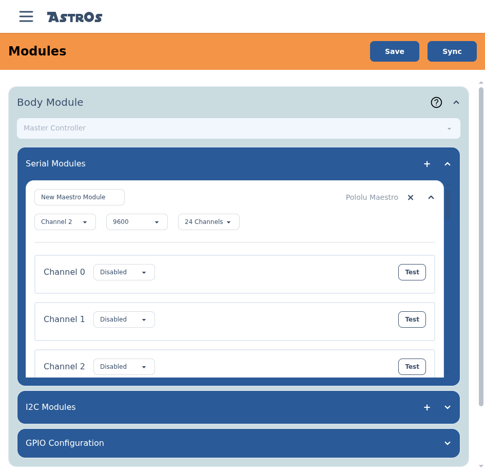

Configure a Pololu Maestro.
A Pololu Maestro is how a node drives servos — the channels you animate, like panels, periscopes and arms. You add it as a serial module on the node it's wired to.
§Add the Maestro
On the Modules screen, expand the location whose node the Maestro is wired to, select + on Serial Modules, choose Maestro, then Add Module. A Pololu Maestro row appears — expand it to configure it.
§Settings

- Name — a label for this Maestro, so you can tell it apart in scripts.
- UART channel — which of the node's serial channels the Maestro is wired to.
- Baud rate — the serial speed (
9600–115200). It must match the baud the Maestro itself is set to, or they won't talk. - Channel count —
6,12,18or24, matching your Maestro model. - Per-channel type — set each channel to Servo (a servo you animate), Output (a simple on/off line), or Disabled.
- Test — each channel has a Test button that fires it on demand, so you can confirm a servo or output is wired correctly before scripting anything.
!
Match the baud and channel count
The baud rate and channel count here must match how the physical Maestro is configured (set in Pololu's Maestro Control Center). A mismatch means servos that don't respond.
Back to Modules & hardware to finish this node, then Save and Sync.